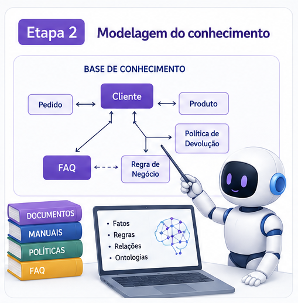

3.2 Etapa 2 - Modelagem do conhecimento

Na etapa de Modelagem do Conhecimento, o objetivo é definir quais informações o agente utilizará, como elas serão organizadas e de que forma serão disponibilizadas para consulta e raciocínio. Essa etapa é fundamental porque a qualidade das respostas do agente depende diretamente da qualidade e da estrutura do conhecimento fornecido.Tem com objetivo, estruturar o conhecimento necessário para que o agente possa compreender, recuperar, relacionar e utilizar informações para executar suas tarefas. Nesta etapa tenta responde à pergunta: O que o agente de IA precisa saber?Itens que podem compor a Modelagem do Conhecimento
1. Identificação das Fontes de Conhecimento
Definir de onde o agente obterá informações.
Exemplos:
- Documentos PDF
- Manuais
- Regulamentos
- Teses e dissertações
- Bases de dados
- APIs
- Planilhas
- Sites institucionais
- Sistemas corporativos
Perguntas:
- Quais informações o agente precisa conhecer?
- Onde essas informações estão armazenadas?
- As fontes são estruturadas ou não estruturadas?
2. Definição dos Limites do Conhecimento
Especificar o que o agente sabe e o que não sabe.
Exemplo:
O agente poderá responder sobre:
- Teses
- Regulamentos
- Produção científica
O agente não responderá sobre:
- Questões jurídicas
- Diagnósticos médicos
- Informações não presentes na base
O resultado dessa etapa consiste em uma representação estruturada do conhecimento necessária para apoiar os processos de raciocínio e geração de respostas do agente.
Exemplo Prático para Modelagem do Conhecimento
Em continuação a Etapa 1, nesta Etapa 2, são as informações que o agente precisa “capturar e ler” ativamente para extrair o conteúdo dos editais:
- Páginas Web Oficiais da CAPES: O código HTML ou feed de notícias da seção de editais e chamadas abertas ou Documentos de Editais (Arquivos PDF).